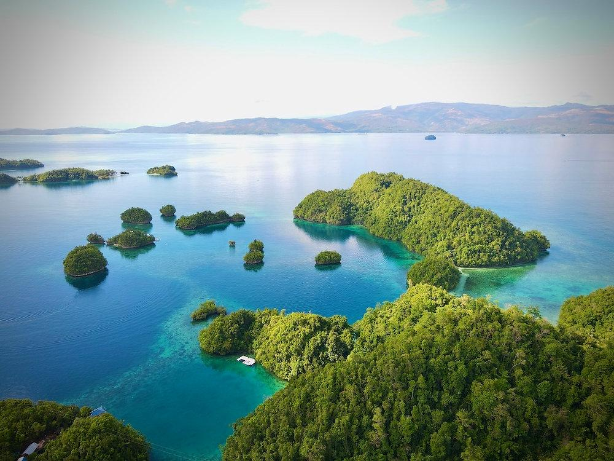
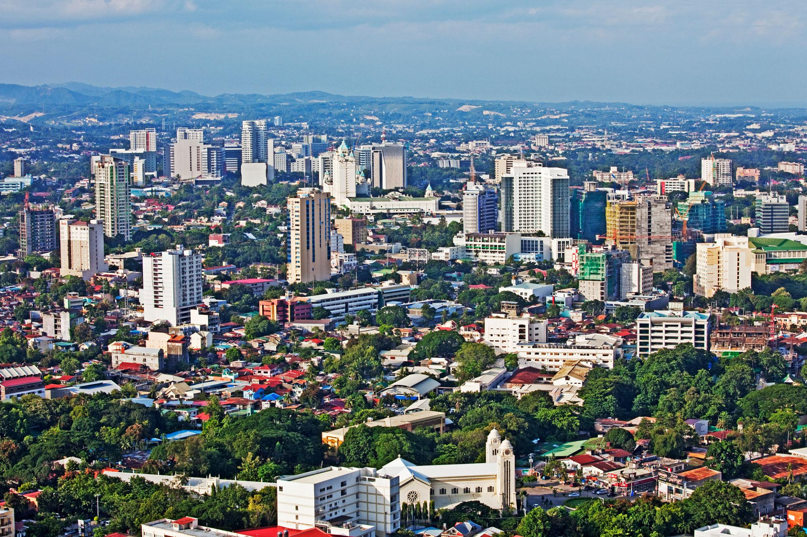
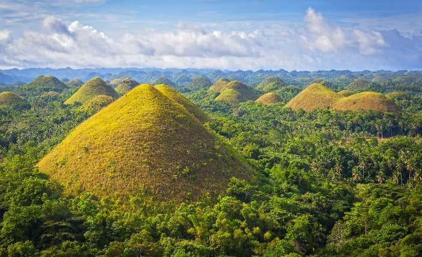

About Visayas



The Visayas is one of the three major island groups of the Philippines, located in the central part of the country. It consists of several islands and provinces known for their rich culture, historical significance, and beautiful natural attractions.
Quick Facts:
- Location: Central Philippines
- Major island groups: Western Visayas, Central Visayas, and Eastern Visayas
- Major islands: Panay, Negros, Cebu, Bohol, Leyte, and Samar
- Languages: Cebuano, Hiligaynon, Waray, and others
- Known for: Beaches, festivals, historical landmarks, and marine biodiversity